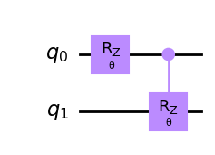

from qiskit import QuantumCircuit, execute, Aer, QuantumRegister, ClassicalRegister
from qiskit.visualization import plot_histogram, plot_bloch_multivectorParameterized Quantum Circuit
Parametryzowane algorytmy kwantowe, czyli takie w których realizujemy obwody przez bramki parametryzowane (liczbami) są podstawowym budulcem algorytmów kwantowego uczenia maszynowego. Bardzo często mozna się spotkać z innymi nazwami: parameterized trial states, variational forms, lub ansatzes.
Ponizszy przykład przedstawia obwód z dwoma bramkami parametryzowanymi jedną liczbą \(\theta\). Do oznaczenia parametru wykorzystano obiekt Parameter dostępn
na podstawie https://learn.qiskit.org/course/machine-learning/parameterized-quantum-circuits
from qiskit.circuit import QuantumCircuit, Parameter
theta = Parameter('θ')
qc = QuantumCircuit(2)
qc.rz(theta, 0)
qc.crz(theta, 0, 1)
qc.draw('mpl')
Jezeli chcemy zastosować wiele parametrów dla róznych bramek mozemy uzyc klasy kilku obiektów na podstawie klasy Parameters lub zastosować klasę ParameterVector.
from qiskit.circuit import ParameterVector
theta_list = ParameterVector('theta', length=2)
qc = QuantumCircuit(2)
qc.rz(theta_list[0], 0)
qc.crz(theta_list[1], 0, 1)
qc.draw('mpl')Skąd wziąć informacje jak powinny wyglądać obwody w zagadnieniach kwantowego uczenia maszynowego?
W ogólności realizowane jest to w formie testowej sprwadz publikację.
import numpy as np
import matplotlib.pyplot as plt
# First, we need to define the circuits:
theta_param = Parameter('θ')
phi_param = Parameter('Φ')
# Circuit A
qc_A = QuantumCircuit(1)
qc_A.h(0)
qc_A.rz(theta_param, 0)
# Circuit B
qc_B = QuantumCircuit(1)
qc_B.h(0)
qc_B.rz(theta_param, 0)
qc_B.rx(phi_param, 0)
# Next we uniformly sample the parameter space for the two parameters theta and phi
np.random.seed(0)
num_param = 1000
theta = [2*np.pi*np.random.uniform() for i in range(num_param)]
phi = [2*np.pi*np.random.uniform() for i in range(num_param)]
# Then we take the parameter value lists, build the state vectors corresponding
# to each circuit, and plot them on the Bloch sphere:
from qiskit.visualization.bloch import Bloch
from qiskit.quantum_info import Statevector
def state_to_bloch(state_vec):
# Converts state vectors to points on the Bloch sphere
phi = np.angle(state_vec.data[1])-np.angle(state_vec.data[0])
theta = 2*np.arccos(np.abs(state_vec.data[0]))
return [np.sin(theta)*np.cos(phi),np.sin(theta)*np.sin(phi),np.cos(theta)]
# Bloch sphere plot formatting
width, height = plt.figaspect(1/2)
fig=plt.figure(figsize=(width, height))
ax1, ax2 = fig.add_subplot(1, 2, 1, projection='3d'), fig.add_subplot(1, 2, 2, projection='3d')
b1,b2 = Bloch(axes=ax1), Bloch(axes=ax2)
b1.point_color, b2.point_color = ['tab:blue'],['tab:blue']
b1.point_marker, b2.point_marker= ['o'],['o']
b1.point_size, b2.point_size=[2],[2]
# Calculate state vectors for circuit A and circuit B for each set of sampled parameters
# and add to their respective Bloch sphere
for i in range(num_param):
state_1=Statevector.from_instruction(qc_A.bind_parameters({theta_param:theta[i]}))
state_2=Statevector.from_instruction(qc_B.bind_parameters({theta_param:theta[i], phi_param:phi[i]}))
b1.add_points(state_to_bloch(state_1))
b2.add_points(state_to_bloch(state_2))
b1.show()
b2.show()